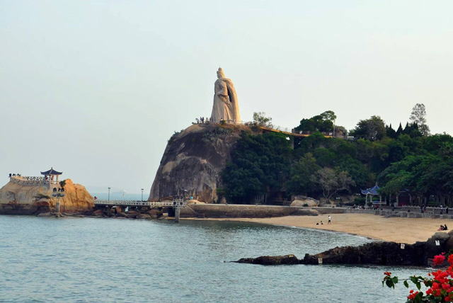
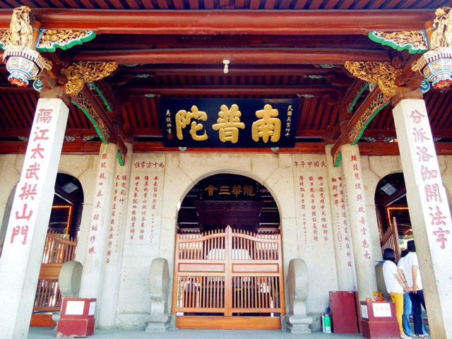
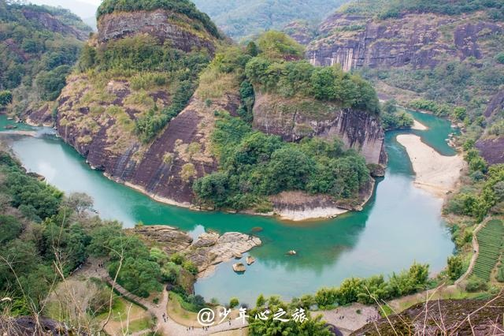
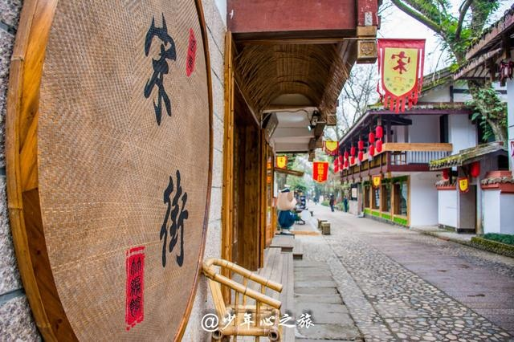
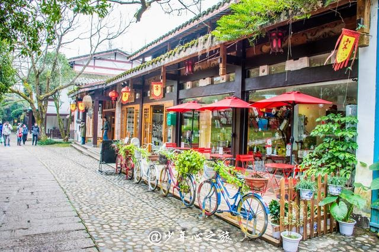

| Prefect Travrling | 首页 | 地区介绍 | 景区介绍 | ||||||||
|
|||||||||||
| 去福建武夷山游玩，看这篇攻略就够了 |
| 2018-06-10 00:00 |
桂林山水甲天下，不及武夷一小丘”，“武夷占尽人间美，愿乘长风我再来”，多少名人雅士前往武夷山写下山中绝句。 去福建武夷山游玩，看这篇就够！上海前往仅需3小时 我的确再来了，13年一次偶然的机会跟朋友说走就走地去了一趟武夷山，那时的高铁还没开通，去之前对武夷山一点了解也没有。时隔4年多，第二次前往这片神奇的土地，念念不忘，必有回响，除了美好回忆，这次还带回来了一份详细的攻略，希望对前往武夷山的朋友有所帮助。 去福建武夷山游玩，看这篇就够！上海前往仅需3小时 【武夷山有什么好玩的】 1，天游峰，“其不临溪而能尽九曲之胜，此峰固应靠前也。”先看看来自旅行专家徐霞客对它的五星好评。天游峰位于九曲溪中的六曲溪北面，中心海拔408.8米，为武夷靠前险峰。若有云海，游此山峰，恍若置身蓬莱仙境，畅游天宫琼阁，“天游”一词因此得名。 去福建武夷山游玩，看这篇就够！上海前往仅需3小时 去福建武夷山游玩，看这篇就够！上海前往仅需3小时 2，武夷桃源洞，位于武夷山六曲畔内，天游峰旁，四面环山，桃林片片，仙气阵阵，日月潭布列其中，相传在唐朝天宝年间，大批道士因武夷仙灵之说来此隐居修炼。 去福建武夷山游玩，看这篇就够！上海前往仅需3小时 去福建武夷山游玩，看这篇就够！上海前往仅需3小时 3，九曲溪，全长10公里，因地质断裂构造作用，折为九溪，有八滩五潭。“溪流九曲泻云液，山光倒浸清涟漪”，可以说这九曲十八弯是武夷山精华中的精华。 去福建武夷山游玩，看这篇就够！上海前往仅需3小时 去福建武夷山游玩，看这篇就够！上海前往仅需3小时 4，武夷宫，自然风光，园林建筑，朱子理学，民俗风情，宗教艺术，自然人文景观于一体，异彩缤纷，引人入胜。其中仿宋的宋街是亮点，不长但很有年代的味道。 去福建武夷山游玩，看这篇就够！上海前往仅需3小时 去福建武夷山游玩，看这篇就够！上海前往仅需3小时 5，一线天，武夷的奇的岩洞，素有“鬼斧神工之奇”的称号。又称“灵岩”，岩体受东西向断裂构造和垂直节理作用裂开一缝隙，长178米，宽约1米，较高处49米，窄处0.3米，名贵衣服戴于身者慎入。 |
|  |
|  |
|  |
|  |
|  |
| 上一篇:《大鱼海棠》取景地超强攻略 |
| 下一篇：穿越千年的繁华，福建泉州超详攻略 |
PREFECT TRAVLING |
 |
地址：江苏省苏州市张家港市福新路1号 电话：13601475824 邮箱：130638633@qq.com QQ： 1370638633 |